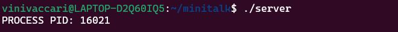
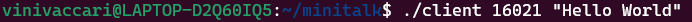
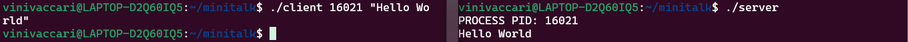

Essentially, minitalk consists of communication between two processes through the exchange of signals between them. We will have 2 programs, the server and the client.
Check my minitalk on GitHub Here.
write, signal, sigemptyset, sigaddset, sigaction, kill, getpid, malloc, free, pause, sleep, usleep, exit.
Signals in computing are like messages sent by the operating system to programs, telling them that something important has happened. It's a way for the system to notify programs about events like when a user presses Ctrl+C to interrupt a program or when a program encounters an error. For example, when you press Ctrl+C to stop a running program, you're actually sending a signal to that program telling it to stop.
In minitalk, we can use two specific signals to send and receive messages. SIGUSR1 and SIGUSR2 are signals in Unix systems that programs can use for custom communication between processes. They're like special messages that programs can send to each other to trigger specific actions or events.
To start, the server should be initialized first and immediately display its PID, which is the unique identifier number of this process in the operating system.
Then the client should be executed and receive two parameters: the PID of the server and the message (string) to be sent.
The client sends each character bit by bit to the server through binary operations. How does it send? In this case, it sends signals where SIGUSR1 represents 0 and SIGUSR2 represents 1. Therefore, the client converts each character bit by bit while the server receives these signals and converts them back to decipher the received message. The server should print the message as output.
The server is initialized and displays the PID.

The client gets the PID and send the string.

The server received the message correctly and printed it.
